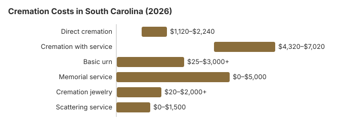

Cremation Costs in South Carolina (2026)
Cremation pricing in South Carolina is simpler than traditional burial but can still vary by thousands of dollars between providers. In South Carolina, direct cremation starts around $1,600 while cremation with a full service averages $5,400, a gap of $3,800. This guide walks through what's included at each price point and how South Carolina's 45% cremation rate shapes local options.
Cremation Choices Offered in South Carolina
Direct Cremation
- Most affordable cremation option
- No viewing or ceremony before cremation
- Body transferred directly to crematory
- Remains returned to family
- Memorial service can be held later
Cremation with Service
- Traditional funeral service before cremation
- Viewing or visitation possible
- Ceremony at funeral home or church
- Typically includes basic urn
- More similar to traditional funeral experience
Cremation Cost Breakdown
| Item | Average Cost | Range |
|---|---|---|
| Direct cremation | $1,600 | $1,120 – $2,240 |
| Cremation with service | $5,400 | $4,320 – $7,020 |
| Basic urn | $50 – $300 | $25 – $3,000+ |
| Memorial service | $500 – $2,000 | $0 – $5,000 |
| Cremation jewelry | $50 – $500 | $20 – $2,000+ |
| Scattering service | $200 – $600 | $0 – $1,500 |
Methodology note: These figures are our estimates, not a survey of local providers, and they are not a quote or professional advice. See how we calculate them or read the full disclaimer.
State sources: S.C. Code § 17-5-570; S.C. Code § 4-9-130.

Checks to Make Before a Cremation in South Carolina
When considering cremation in South Carolina, keep these important points in mind:
- Get the South Carolina provider's General Price List before you agree to anything; the direct cremation line must state what it includes, and the price should cover transport, the cremation itself and a basic container for the ashes.
- A South Carolina provider offering direct cremation must let you use an unfinished wood box or other alternative container instead of a casket (FTC Funeral Rule, 16 CFR 453.3(b)).
- Before signing, ask the South Carolina provider when the ashes will be ready, how they are returned, and whether a certified copy of the death certificate is in the price.
Ways to Spend Less on Cremation in South Carolina
Cremation costs in South Carolina can be reduced with these strategies:
- Compare at least 3 cremation providers in South Carolina: Request written General Price Lists.
- Check cremation societies: Nonprofit cremation societies operate in several South Carolina metros and often undercut full-service funeral homes by $300-$900 on direct cremation while meeting all South Carolina regulatory requirements.
Regional Context for Cremation in South Carolina
About 45% of South Carolina deaths now end in cremation, still under the national rate, and the savings against a traditional burial usually run $5,100 or more. You can settle the question yourself in advance: state law lets a person sign a cremation authorization form for their own cremation, revocable at any time by written notice to both the funeral home and the crematory, and whoever holds that form at death must see that its instructions are followed (S.C. Code § 32-8-315).
Cremation Resources
- Funeral Consumers AllianceNonprofit advocacy: compare cremation providers
- Cremation Jewelry GuideMemorial keepsakes and remembrance options
- Cremation vs. Burial CostsSide-by-side cost comparison
- Pet Cremation CostsOptions and prices for pet cremation and memorials
- Final Expense InsuranceCoverage options to help pay for cremation costs
Compare Funeral Costs
- Average Funeral Cost in 2026National cost breakdown with real prices
- Cremation vs. Burial Cost ComparisonSide-by-side price comparison to help you decide
- Funeral Cost BreakdownEvery line item explained: know what you're paying for
- Cheapest Funeral OptionsLower-cost alternatives, with typical price ranges
- Direct Cremation: Most Affordable OptionNFDA 2023 median $2,645 with a family-supplied container (latest available)
- How to Compare Funeral PricesStep-by-step guide to getting the best price
Frequently Asked Questions
How much does cremation cost in South Carolina?
Cremation costs in South Carolina range from $1,600 for direct cremation to $5,400 for a full funeral service followed by cremation.
What kinds of cremation services can I choose in South Carolina?
Three paths are standard in South Carolina: (1) direct cremation, $1,600, just the cremation itself, no service; (2) cremation with memorial, cremation first, ceremony later at a location of your choice, priced in between; (3) cremation with full funeral, $5,400, ceremony and viewing before cremation.
What legal requirements apply to cremation in South Carolina?
The core rule comes from S.C. Code § 32-8-340. South Carolina bars cremation until 24 hours after death and requires a death certificate, next-of-kin authorization, and a coroner's cremation permit.
Complaints about how a crematory or funeral home handled these steps go to the South Carolina Board of Funeral Service (803-896-4429).
Can I scatter ashes in South Carolina?
Scattering laws in South Carolina vary by location. Some South Carolina families also choose columbarium niches, burial of ashes, or memorial keepsakes as alternatives to scattering.
What is driving South Carolina's cremation rate?
Cost is a major reason: the national median for a funeral with cremation is $6,280 versus $8,300 with burial (NFDA 2023), and direct cremation in South Carolina costs less than either. Cremation also avoids buying a South Carolina cemetery plot unless the family wants one.
What is the timeline for cremation in South Carolina?
South Carolina bars cremation until 24 hours after death and requires a death certificate, next-of-kin authorization and a coroner's cremation permit (S.C. Code § 32-8-340). A crematory's refrigeration for bodies held 24 hours or longer must keep 40°F under the Board's regulations (S.C. Code Regs. ch. 57), and if its retort is down for more than a day it must turn bodies away unless it can refrigerate them.
The Cremation Association of North America puts the chamber time at between 30 minutes and more than two hours, depending on the body, with more time needed afterward for cooling and processing. Ask the funeral home when the remains will be ready to collect.
Can I hold a funeral service before cremation in South Carolina?
Yes. A South Carolina funeral followed by cremation runs about $5,400 on this site's estimates, usually $4,320 to $7,020; direct cremation is about $1,600.
The Board of Funeral Service says embalming is not needed for cremation, though families planning a viewing may prefer it. South Carolina bars cremation until 24 hours after death and requires a coroner's permit (S.C. Code § 32-8-340), so a viewing on the first evening and cremation the next day is a common schedule.
More for South Carolina
What a South Carolina coroner's cremation permit costs
In South Carolina the person who arranges a cremation must get the permit from the coroner or medical examiner of the county where the death happened. Wilfully skipping it is a misdemeanor (S.C. Code § 17-5-600). Coroners set their own charges, so the price varies by county. Richland County takes requests online only, and they must include the signed death certificate, the burial-removal-transit permit and the signed cremation authorization. The office emails the permit back and charges $20 (Richland County Coroner's Office; checked October 29, 2026).
Smaller counties may charge more. Bamberg County's coroner began charging $35 for a cremation permit on January 1, 2026. Funeral homes usually pass this fee on as a cash advance item. A bill introduced in 2023 (H. 3017) would have banned coroners from charging for cremation permits. It was referred to the House Labor, Commerce and Industry Committee and was not enacted in the 2023-24 session.
Cremation rules and help in South Carolina
Crematories and the funeral homes that sell cremation in South Carolina answer to the South Carolina Board of Funeral Service (803-896-4429).
South Carolina is not among the nine states the Funeral Consumers Alliance lists as requiring a funeral director, but no South Carolina crematory will proceed without the death certificate, the cremation permit and the next of kin's signed authorization.
What the law says about timing: South Carolina bars cremation until 24 hours after death and requires a death certificate, next-of-kin authorization, and a coroner's cremation permit (S.C. Code § 32-8-340).
A South Carolina county council may fund indigent cremation, but only after the deceased's estate has been used (S.C. Code § 17-5-570). (Source: S.C. Code § 17-5-570; S.C. Code § 4-9-130.) Social Security's $255 lump sum is paid only to an eligible South Carolina spouse or child, and only if claimed within two years of the death.
Choosing cremation does not give up a South Carolina veteran's cemetery benefit; urns can be interred in national cemeteries free of charge. Options in South Carolina include Fort Jackson National Cemetery (803-699-2246), Beaufort National Cemetery (843-524-3925), and Florence National Cemetery Annex (843-669-8783). See cem.va.gov. The Florence site that takes new interments is the national cemetery annex on Stockade Drive.
Next steps for a cremation in South Carolina
- Ask South Carolina cremation providers to itemize transport, the container and the crematory fee before you choose one.
- Build the 24-hour wait set by S.C. Code § 32-8-340 into any South Carolina travel or memorial plans.
- Ask whether the South Carolina county council funds cremation for indigent residents.
- A cremation provider that misstates its prices can be reported at 803-896-4429.